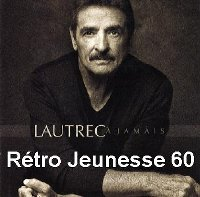
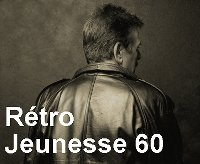

Donald Lautrec
De retour sur disque... et sur scène
À 69 ans, Donald Lautrec "L'idole de toute une génération" fait un retour sur disque et sur la scène.
Il va se produire à la Place des Arts le 18 mai 2010. Son nouvel album qui a pour titre "Lautrec à jamais", contient 11 titres dont la reprise des succès suivants "Un peu d'innocence", "Salut les amoureux" et "Aranjuez, mon amour".
Johanne Blouin et sa fille Élizabeth participent en tant que choristes à la réalisation de l'album.
Véritable coqueluche de l'époque yéyé des années 60 au Québec, il s'agit de son premier album depuis... l'arrivée des disques compacts! Le prédécesseur d'À jamais date en effet de 28 ans.
Donald Lautrec avait connu un grand succès dans les années 1960 et 1970 avec des tubes comme Loop de loop, C'est le ska, Manon viens danser le ska, Tu dis des bêtises, ÉloÏse et Le mur derrière la grange avant de quitter la musique pour produire des quizz télévisés dans les années 1980, et de prendre une retraite précoce il y a maintenant près de 20 ans.